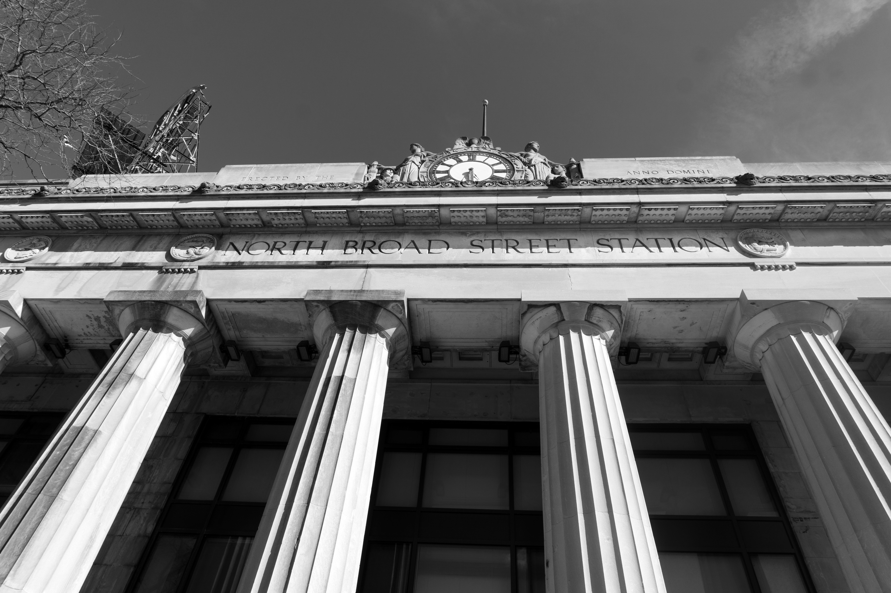
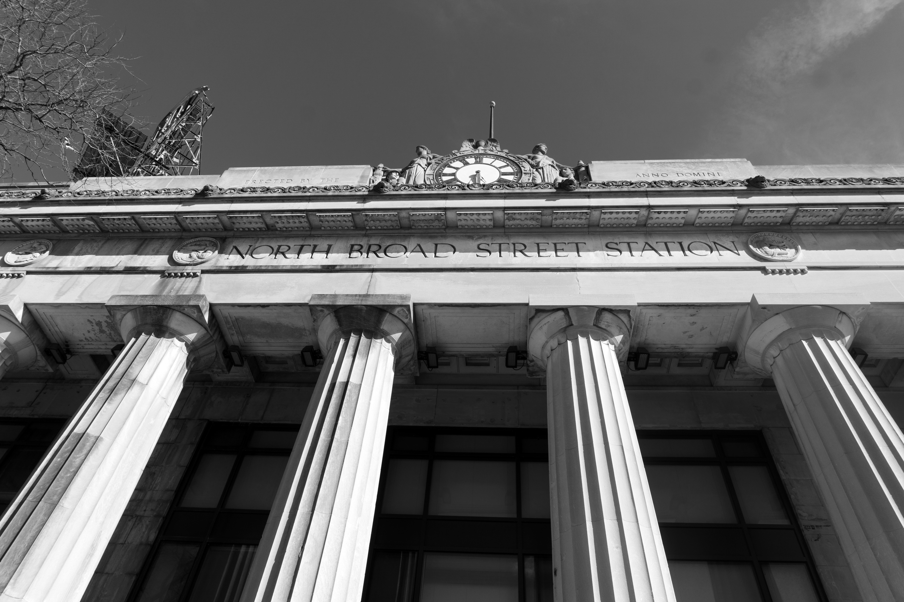

Philadelphia Railroad Photography
2023
A collection of photos exploring abandoned railroad infrastructure and remnants in and around Philadelphia. I find it really interesting what railroads demolish vs leave as-is when closing a rail line.

 
